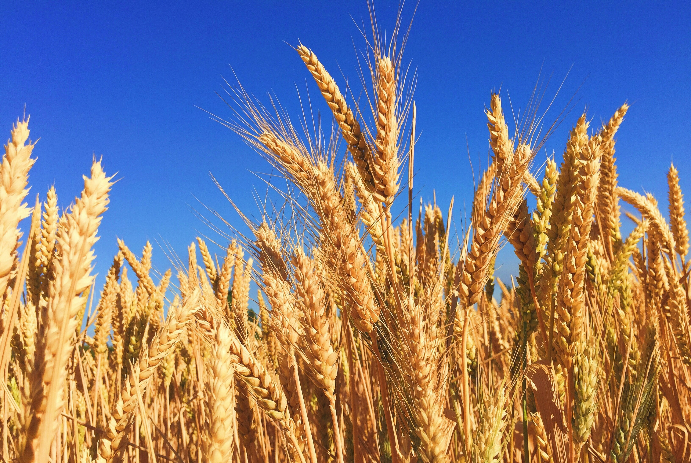
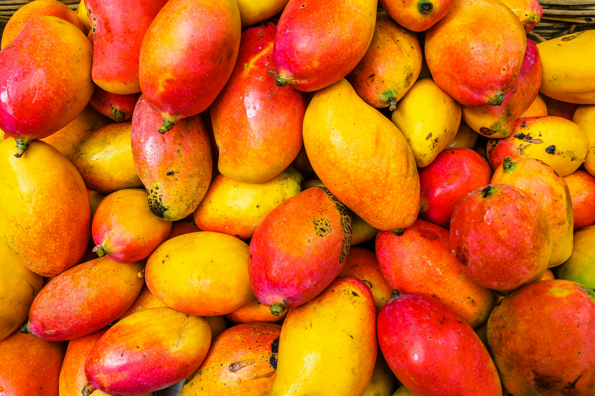
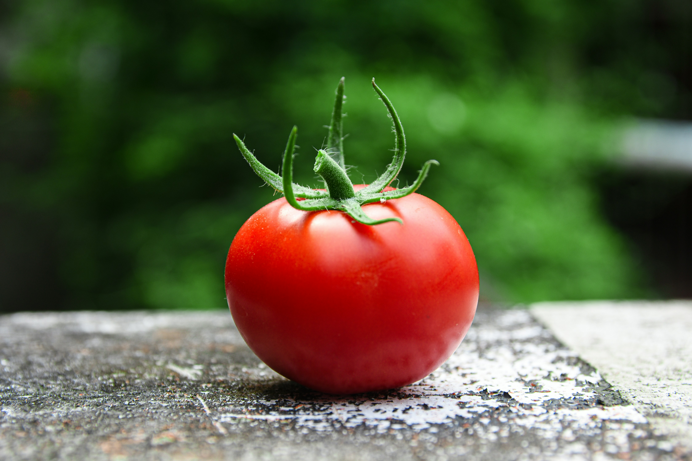

Crop Details
Comprehensive crop information for better farming decisions

Rice
Varieties: Basmati, IRRI
Soil: Clay soil
Cultivation: Transplanting method
Harvest: 120–150 days
Nutritional Value: High carbohydrates
Uses: Staple food, rice products

Wheat
Varieties: BARI Gom-30, Shatabdi
Soil: Loamy soil
Cultivation: Seed sowing
Harvest: 110–130 days
Nutritional Value: Carbohydrates, Protei
Uses: Bread, flour, pasta

Mango
Varieties: Himsagar, Langra
Soil: Well-drained loamy soil
Cultivation: Grafting method
Harvest: 3–5 years
Nutritional Value: Vitamin A, C
Uses: Juice, fresh fruit

Banana
Varieties: Cavendish, Sabri
Soil: Fertile loamy soil
Cultivation: Sucker planting
Harvest: 9–12 months
Nutritional Value: Potassium, Vitamin B6
Uses: Snacks, smoothies, desserts

Tomato
Varieties: Cherry, Roma
Soil: Loamy soil
Cultivation: Seedling transplant
Harvest: 60–80 days
Nutritional Value: Vitamin C, Lycopene
Uses: Cooking, salad

Potato
Varieties: Cardinal, Diamant
Soil: Sandy loam soil
Cultivation: Tuber planting
Harvest: 90–120 days
Nutritional Value: Carbohydrates, Vitamin C
Uses: Fries, chips, curry